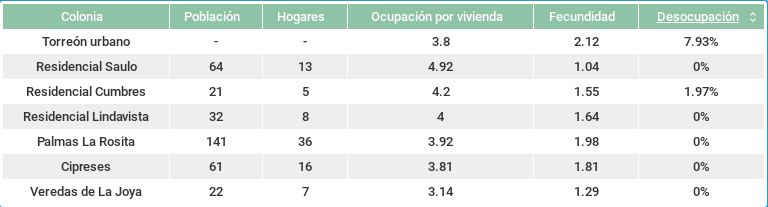
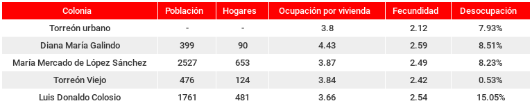
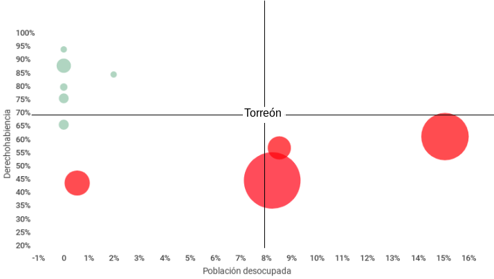
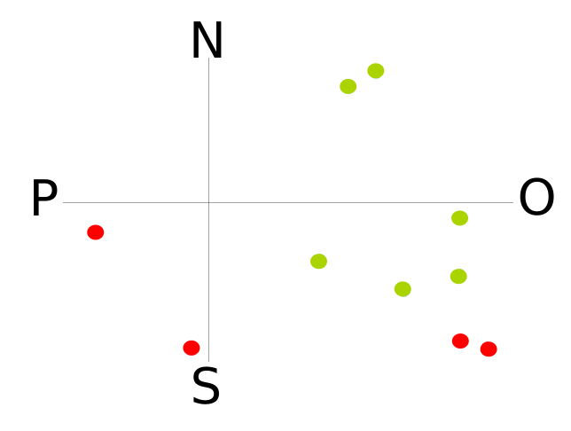

La colonia es la unidad principal en la conformación de las ciudades, es el lugar en donde se desenvuelve, generalmente, nuestra vida diaria. Cada vez es menos frecuente que nuestras labores se desarrollen en otro lugar que no sea al interior de la urbe. Es una característica de la dinámica urbana.
Las colonias a su vez se conforman por viviendas, que se refiere a las construcciones cuya finalidad son el ser habitadas y una vez sucedido esto, se consideran hogares. Es oportuno destacar que existen colonias que aunque sean de un nivel socio económico alto, la cobertura de servicios y bienes no alcanzan la totalidad de las viviendas debido a diversas circunstancias, generalmente, por no encontrarse habitadas.
La importancia del análisis de la cobertura de los servicios, bienes y la conjugación entre estos podemos encontrarla en la generación de información sobre la calidad y las condiciones en que se desenvuelve la vida de los habitante de la colonia.
Para este análisis, de las 399 colonias de Torreón que se tienen registradas en el proyecto Indicadores Básicos de Colonia, se consideraron 364 colonias que cuentan con al menos tres hogares. De éstas, se seleccionó a las que tienen cobertura del 100% de sus viviendas en electricidad, agua, drenaje, televisión, automóvil y computadora, resultando seis: Residencial Saulo, Residencial Cumbres, Residencial Lindavista, Palmas La Rosita, Cipreses y Veredas de La Joya. También se seleccionaron las colonias cuya cobertura en alguna de las seis variables analizadas fueron ubicadas con los mayores rezagos, resultando cuatro: María Mercado de López Sánchez, como la colonia con mayor rezago en cinco variables, Luis Donaldo Colosio, con el segundo mayor rezago en cuatro, Torreón Viejo y Diana María Galindo, ambas con una. En la gráfica se incluye la media de la zona urbana de Torreón.
Gráfica 1

Las seis colonias cuya cobertura alcanza la totalidad de las viviendas son pequeñas: en total 341 habitantes en 85 hogares. La ocupación por vivienda es superior a la media de Torreón (3.8) en cinco casos, estos van desde 3.81 personas por vivienda a 4.92. Todas cuentan con una tasa de fecundidad menor al promedio de la zona urbana de Torreón (2.12 hijos por cada mujer). La población desocupada es de 1.97% para Residencial Cumbres y de 0% para las cinco restantes.
Tabla 1

En el caso de las cuatro colonias con rezago en cobertura de las viviendas, destaca la cantidad de personas que las habitan: 5,163 distribuidas en 1,348 hogares. Esto arroja una ocupación por vivienda mayor que la media de la ciudad en 3 de 4 casos. La fecundidad es mayor al promedio de Torreón y al grupo anterior, aún asi no se ubican entre los más altos de la ciudad. La población desocupada es mayor que el promedio, exceptuando Torreón Viejo que es de las menores de la ciudad y Luis Donaldo Colosio que duplica el dato de la zona urbana de Torreón.
Tabla 2

Las seis colonias del primer grupo, reflejan el acceso total que tienen al automóvil y a la computadora a un nulo desempleo, una media-alta ocupación por vivienda y baja fecundidad. Podrían ser colonias habitadas por familias planificadas, estables laboralmente, con necesidades de traslados frecuentes a diferentes puntos de la ciudad y un mayor uso de la computadora, al menos desde 2010. A diferencia de las colonias con rezagos, en donde observamos la conjugación de una media-alta ocupación por vivienda, alta fecundidad y alto desempleo. Se observa una correlación con los bajos números de las variables automóvil y computadora. Esto se hace evidente en la gráfica 2, en donde se cruza el acceso a la derechohabiencia, el desempleo y el número de habitantes de cada colonia (tamaño del punto).
Gráfica 2

Los puntos en color verde son aquellas colonias analizadas que cuentan con cobertura total, las rezagadas se encuentran en rojo.
Los cuadrantes son dividos por el promedio de la ciudad en derechohabiencia y desempleo. El cuadrante superior izquierdo indica una situación favorable para la calidad de vida en función del análisis realizado y el promedio de la ciudad, situación opuesta al cuadrante inferior derecho.
Por último, al ubicar geográficamente las diez colonias abordadas encontramos que el rezago se encuentra al sur, sur-oriente y poniente de la ciudad. Las seis restantes se ubican hacia donde se expande la mancha urbana, norte y oriente.
Plano 1
